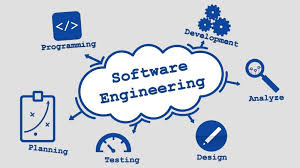

Asphalt 9 Website

Focus Detector

FutsalMatcher
A System Analyst passionate about analyzing business processes, defining system requirements, and collaborating with stakeholders to deliver scalable and effective solutions.
Check out some of my projects
My Academic Background
2017 - 2020
Bachelor Degree Computer Science, 2023 - 2027 (Expected)
2020 - 2023
Skills I gained through projects and self-learning.